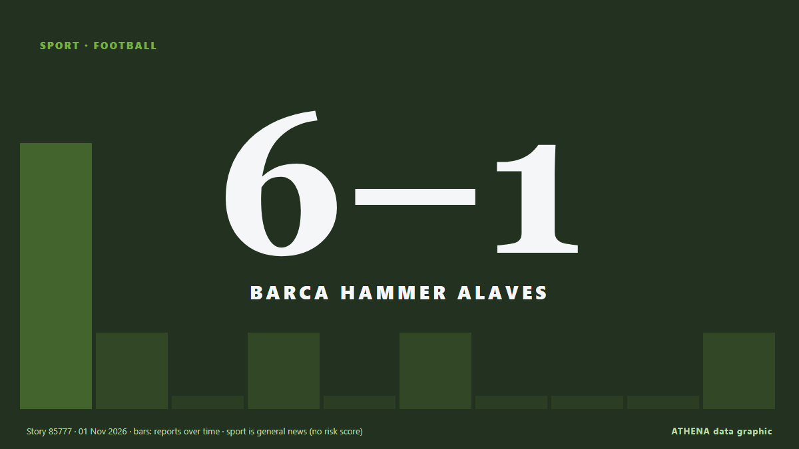

Barca hammer Alaves 6-1 to retain Liga top spot

Raphinha and Lamine Yamal struck twice each as Barcelona thrashed Alaves 6-1 on Saturday to reclaim their La Liga lead and get back on track after two damaging defeats. von Vanguard
Unabhängig gemeldet von 9 Medien in 7 Ländern seit dem 31. Okt., zuerst von CNA (Channel NewsAsia); die Berichterstattung ist auf dem Höhepunkt. Sport und Kultur werden ohne Risikobewertung abgelegt. Die Konfidenz liegt bei 90 % (hoch): 9 Medien bestätigen es unabhängig, bei einer mittleren Verlässlichkeit der Quellen von 77 %. Medien nach Land: Malaysia (2), Pakistan (2), Singapur (1). Berichterstattung: 31. Okt. bis 1. Nov., 11 Stunden.
Was sich geändert hat: 9 neue Berichte von 9 Redaktionen in den 24 Stunden bis 1. Nov..
Erste Schlagzeile: Barcelona bounce back with big win over Alaves
Schlagzeilen werden auf Englisch angezeigt, wie veröffentlicht.
Auf einen Blick
Ausgewählt, bewertet und geschrieben nach der veröffentlichten Methodik von ATHENA. Kein Redakteur greift in einzelne Ereignisse ein. So entsteht ATHENA ›
| 31 Oct 22:06 UTC | 4 |
|---|---|
| 31 Oct 23:06 UTC | 1 |
| 01 Nov 00:06 UTC | 0 |
| 01 Nov 01:06 UTC | 1 |
| 01 Nov 02:06 UTC | 0 |
| 01 Nov 03:06 UTC | 1 |
| 01 Nov 04:06 UTC | 0 |
| 01 Nov 05:06 UTC | 0 |
| 01 Nov 06:06 UTC | 0 |
| 01 Nov 07:06 UTC | 1 |
| 01 Nov 08:06 UTC | 0 |
| 01 Nov 09:06 UTC | 1 |
Warum diese Zahlen
Bedeutung
Risiko
Konfidenz
Die Berichterstattung – wer berichtete, und wann
Schlagzeile wie veröffentlicht · öffnet das Original- CNA (Channel NewsAsia) · SingapurBarcelona bounce back with 6-1 win over Alaves
- APA (English) · AserbaidschanBarcelona regained the lead in the Spanish league after defeating Alaves
- Vanguard · NigeriaBarca hammer Alaves 6-1 to retain Liga top spot
- Free Malaysia Today · MalaysiaBarca hammer Alaves to retain La Liga top spot
- Arab News · Saudi-ArabienBarca hammer Alaves to retain Liga top spot
- New Straits Times · MalaysiaBarca hammer Alaves to retain Liga top spot
- Express Tribune · PakistanBarca hammer Alaves to retain Liga top spot
- Business Recorder · PakistanBarcelona bounce back with 6-1 win over Alaves
- Al Jazeera English · KatarLamine Yamal, Raphinha help Barcelona hammer Alaves to retain Liga top spot